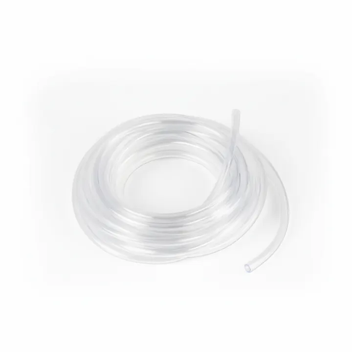

من مجموعة أكوا هافنAQUA HAVEN / THE COLLECTION
خرطوم هواء للأحواض – من 1 إلى 3 متر
خرطوم هواء للأحواض، خرطوم مرن لتوصيل مضخة الهواء بأحجار الهواء والفلاتر الإسفنجية وملحقات التهوية.
١٠ ر.س – ٢٠ ر.س
متاح ضمن اللقطة المرجعية
مساحة للاكتشاف، قبل الاختيار.
واصل استكشاف المجموعة هذه معاينة للتصميم. الأسعار والخيارات والتوفر مرجعية وغير متزامنة؛ لا يمكن الطلب أو الدفع من هذه الصفحة.
A CLOSER LOOK
نظرة أقرب.
خرطوم هواء للأحواض — خرطوم مرن لتوصيل مضخة الهواء بأحجار الهواء والفلاتر الإسفنجية وملحقات التهوية.
المواصفات الأساسية
- النوع: خرطوم هواء للأحواض
- الأطوال: 1 متر، 2 متر، أو 3 أمتار
المميزات
- مرن وسهل التوجيه
- متوافق مع ملحقات الهواء القياسية
- خيارات طول متعددة
الاستخدام والعناية
قص الخرطوم بالطول المناسب وثبته جيدًا على الوصلات لتجنب تسرب الهواء.
ملاحظة مهمة
استخدم صمام عدم رجوع إذا كانت المضخة أسفل مستوى الماء.